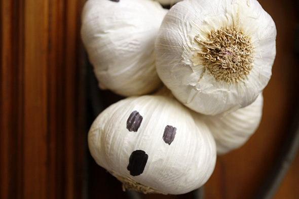

Last minute halloween decor. Some garlic's as ghosts, which at the same time ward off vampires.


Last minute halloween decor. Some garlic's as ghosts, which at the same time ward off vampires.

This vampire tells you the taste of your blood. Here is the printable in english and here in our video channel you can see Hannah mounting…
Read more →
A spider web of Nerea! Our first guest fairy !! She also sends the instruction via video ! Thanks artist!!!
Read more →
We made from apples shrunken heads. Unfortunately, I had the oven a little too warm so the apples are more coal heads :-) .... Creepy deco…
Read more →
Colored ping pong balls. You can put them on a string and carry them with you in Halloween.
Read more →
Halloween This sympathetic little ghosts are the perfect Halloween decoration. You have to paint with white paint the acorn and glue the hats back on. Then…
Read more →